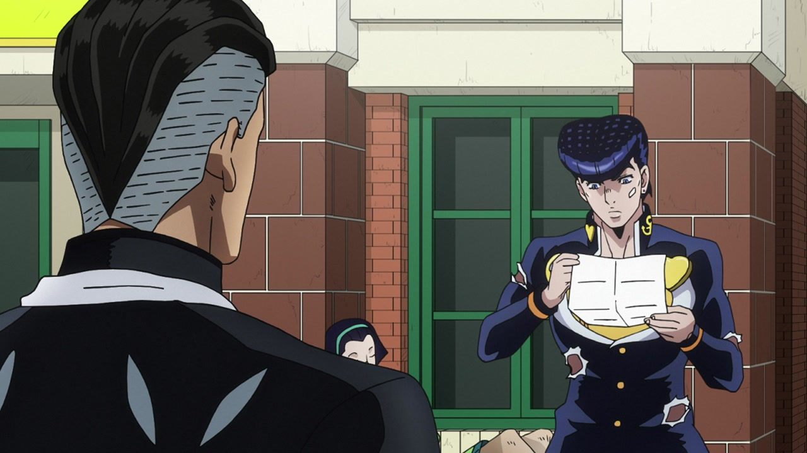
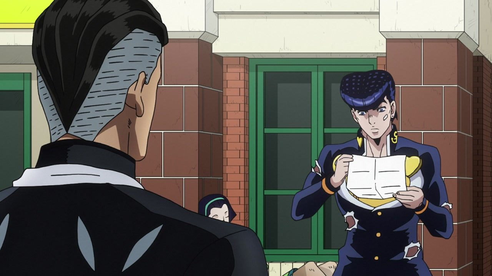

Hey hey hey! Welcome back! You might have noticed that something was… a bit wrong with this site in the last two weeks! Well, my dear readers, the truth of the matter is that I was a bit of an idiot, and messed up the CSS layout; while trying to fix that I somehow also managed to create a merge conflict with my github repository, which meant that I could basically no longer commit anything to the site. Well, after two solid weeks of poking, prodding and desperation I managed (thanks to a very dear friend of mine) to restore everything to the way it was always supposed to be. Hurray! Happy days!
So, without further ado, welcome back to Jojo’s Bizarre Comparisons, and let’s head right into this week’s episode, “July 15th (Th.) - Part 3”!
- Let’s begin with basically the same difference as the last one from the last comparison. I quote: “Josuke’s eyes have been retouched, you can sort of see one of the holes in his uniform, the hand gash is back again and Tomoko has been shaded a little bit better”. Plus, Josuke’s chin has also been slightly cleaned up:
- Here, Josuke’s face shape is slightly different (and the shade on his neck has also been moved slightly down), his eye area has been retouched and the symbols on his collar are looking better:
 

- In this shot, Josuke’s face shape is different again, his eye is looking much better, there’s a shadow in his ear and the line in his neck is slightly longer:
- Let’s go back to our nasty boy Rohan! Here we have a… sort of uncensored couple of frames:
- And again, this poor dude’s back is slightly redder here, and the background has been shaded differently:
- Here, have two other uncensored frames:
- In this frame, they remembered to draw a couple of Rohan’s shirt holes:
- …and his collar is slightly different in a couple of frames:
- Here we have another sort of uncensored back, plus the shading is different on a few things. There’s also the usual distortion around the edges, plus a slight blur to accompany it:
- Minako is 10 years younger here:
- In this shot Cheap Trick’s chin area is darker:
- And here, a couple of Rohan’s shirt holes have been moved around:
- In this shot (look, I know I always start these as “In this shot” or with “Here”, but I have no idea what to do to give this a bit of variety!) Cheap Trick’s chin and mouth have been shaded differently, and the background is different as well:
- Rohan’s cheekbone line and nose have been redrawn here, one of his sweat drops now has a shadow (IMPORTANT), Cheap Trick has some bits which are blacker and its eyes have been veeery slightly retouched:
- Oh, an animation! Back to Josuke, have a brighter & sharper bit:
- In this very zoomed-in frame, the gash on Josuke’s hand is back, and his eye has been retouched:
- Here we have… less distortion, Josuke’s pupil has been retouched and his collar is no longer missing half an anchor:
- In this scene, both the silhouettes and their actual faces have been retouched:
- The camera has been positioned differently here (well, ok, there is no actual camera, but you get what I mean); Terunosuke also looks slightly less like a Yu-gi-oh character:
- Both face have been redrawn here, Josuke’s hand also looks better and the zoom is different:
- This very nice shot has been slightly zoomed in:
- There’s a ton of differences here, but mostly CRAZY DIAMOND! Look at that face:
- Rohan’s shirt has waaay more details in the BDs, and his left hand is no longer separated from his arm by a line:
- Yuuya is more handsome here, and the S on his dumb baby tie is thinner:
- Here, Yuuya’s eyes, and Highway Star’s facial features have been rearranged a bit:
- Yuuya’s face no longer shivers when he’s sniffing around:
- Again, his face has been retouched here:
- The car is no longer mysteriously invisible here:
- Boy, Yuuya’s face has been retouched quite a bit in this episode, huh:
- This explosion is way brighter:
- Here, Yuuya has legs…:
- …and the piece of paper he’s in flutters more in the BDs:
- Here, Terunosuke has received a makeover in the head-neck area:
- The holes on Josuke’s uniform are back again here:
- Here we have a big’un! First of all, the sky is slightly differently shaded, then Terunosuke’s eye has been slightly retouched, Josuke’s entire face is looking better and MAH BOY KOICHI is looking even baller:
- Here, while Josuke shows us what he learned from his nephew, we can see that the shading on his left cheek is slightly different, and the bandage has been moved:
- The crew is back, and it’s looking even more smug than it used to! Every face has been retouched, and Josuke’s collar has also been recoloured, his anchor symbol is looking better and the clouds in the background have slightly different shading:
- Here, Josuke’s nails look slightly less weird:
- In this shot, Josuke’s eyes have been slightly retouched, and you can see the tiniest tip of his hand gash:
- Back to Rohan! Cheap Trick’s black bits are back here:
- Let’s go to the credits for a last quick difference! Here, as you can see on the right, the third row from the bottom is missing the last character (佐): 制作進行補 is “Assistant production advance” (no, I don’t know what that means either), and the extra 佐 also means “assistance”; in fact, 補佐 (hosa) does usually mean “assistance”, but usually you wouldn’t find this compound at the end of a job description, so I’m assuming it was just a typo:
Aaand that’s it for this week’s comparison! I’m so, so glad that everything is back on track again and I can go back to posting my comparisons to this blog! I hope you had a good time reading through these differences, and I’ll see you next week for the last part in the July 15th (Th.) tetralogy.
Bye!